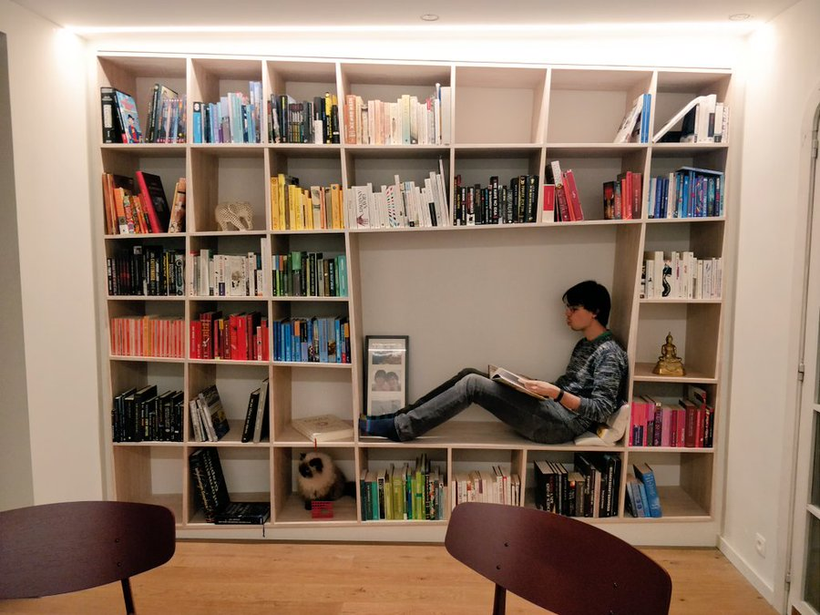

The books of 2018

Peeking in someone’s bookshelf is roughly equivalent with looking into that person’s brain, seeing what they are interested in, want to learn and become [1]. With the new year, it is useful to look back to the books of 2018. I ordered them by topic and highlighted those why I found particularly good!
Some of the best books I have read are recommendations. If you know a book I would like, feel free to do suggestions. You can always add me on Goodreads.
Novels and short stories
I notice that I am reading less fiction than I am used to. Being in academia for a decade has wired my brain to be able to process facts and information quite efficiently whereas I often (still) struggle to keep track of the names of most characters in stories.
Still, 2018 contained some stories for me, both high- and low-brow. As always, a new book of Murakami is a delight! I also enjoyed reading one or two of the fairy tales collected by Angela Carter before going to bed. For those liking humorous books, I could recommend the The Checquy Files series. Think: what if the Ministey of Magic ran a spy agency?
- ‘Stephen Florida’ by Gabe Habash (***)
- ‘Een Idea verschijnt (De moord op Commendatore #1)’ by Haruki Murakami (*****)
- ‘Metaforen verschuiven (De moord op Commendatore #2)’ by Haruki Murakami (*****)
- ‘Angela Carter’s Book of Fairy Tales’ by Angela Carter (*****)
- ‘The Boy in the Striped Pajamas’ by John Boyne (****)
- ‘The Sandman Omnibus, Vol. 1’ by Neil Gaiman (*****)
- ‘Do Androids Dream of Electric Sheep?’ by Philip K. Dick (****)
- ‘The Word is Murder’ by Anthony Horowitz (****)
- ‘The Lathe of Heaven’ by Ursula K. Le Guin (****)
- ‘The Handmaid’s Tale’ by Margaret Atwood (*****)
- ‘Het achtste leven (voor Brilka)’ by Nino Haratischwili (*****)
- ‘A Day in the Life of Marlon Bundo’ by Jill Twiss (****)
- ‘The Rook (The Checquy Files, #1)’ by Daniel O’Malley (****)
- ‘Stiletto (The Checquy Files, #2)’ by Daniel O’Malley (***)
Cooking
If you like cooking, you must absolutely read Salt, Fat, Acid, Heat [2]! I also became a bit of a Tim Ferriss fanboy last year, so I went though the 4-Hour Chef on a lonely Friday evening. The first chapter on metalearning is perhaps the most general applicable. As a side-note, Tim Ferriss interviewed Nosrat, the author of Salt, Fat, Acid, Heat, on his podcast [3].
- ‘Salt, Fat, Acid, Heat: Mastering the Elements of Good Cooking’ by Samin Nosrat (*****)
- ‘The 4-Hour Chef: The Simple Path to Cooking Like a Pro, Learning Anything, and Living the Good Life’ by Timothy Ferriss (***)
Biology
Many interesting biology books. During my time at Poisotlab they started the habit of reading one chapter a week of Rockwood’s Introduction to Population Biology, with a different person summarizing the chapter every Friday. An excellent idea! The textbook itself is also a recommended intro to population ecology, a topic not really discussed during my studies as a Bioscience Engineer.
I definitely recommend reading Thinking Like a Phage. Finally a book with the phage and not the bacterium as the protagonist! Not only super interesting, but already worth buying for the gorgeous artwork!

- ‘How to Change Your Mind: What the New Science of Psychedelics Teaches Us About Consciousness, Dying, Addiction, Depression, and Transcendence’ by Michael Pollan (***)
- ‘Introduction to Population Ecology’ by Larry L. Rockwood (***)
- ‘Self Comes to Mind: Constructing the Conscious Brain’ by Antonio R. Damasio (***)
- ‘The Drunken Botanist: The Plants That Create the World’s Great Drinks’ by Amy Stewart (****)
- ‘The Plant Messiah’ by Carlos Magdalena (***)
- ‘The Hidden Life of Trees: What They Feel, How They Communicate’ by Peter Wohlleben (****)
- ‘Thinking Like a Phage: The Genius of the Viruses That Infect Bacteria and Archaea’ by Merry Youle (*****)
Anthropology
I usually don’t read too much about society and history. So it has to be a pretty highly-regarded book when I pick it up in this topic. The books of Harari and Rosling are strongly recommended, and I enjoyed reading them enormously!
- ‘Sapiens: A Brief History of Humankind’ by Yuval Noah Harari (*****)
- ‘21 Lessons for the 21st Century’ by Yuval Noah Harari (****)
- ‘Factfulness: Ten Reasons We’re Wrong About the World – and Why Things Are Better Than You Think’ by Hans Rosling (****)
- ‘Life 3.0: Being Human in the Age of Artificial Intelligence’ by Max Tegmark (***)
Mathematics and computer science
If you want to up your game in bioinformatics, Bioinformatics Algorithms: An Active Learning Approach is good a textbook as any to this topic. The Book of Why also sent some shockwaves in the machine learning community this year. I wished I had read it sooner and can recommend it to any scientist. I tried to summarize the main points earlier in a blogpost.
By coincidence, I discovered the little gem In Pursuit of the Traveling Salesman, an amusing introduction to this famous computer science problem and an accessible overview to many topics in discrete optimization.
- ‘Clean Code: A Handbook of Agile Software Craftsmanship’ by Robert C. Martin (***)
- ‘Bioinformatics Algorithms: An Active Learning Approach’ by Phillip Compeau (*****)
- ‘Elements of Causal Inference: Foundations and Learning Algorithms’ by Jonas Peters (***)
- ‘Deep learning with Python’ by Francois Chollet (****)
- ‘Julia Programming for Operations Research: A Primer on Computing’ by Changhyun Kwon (***)
- ‘The Book of Why: The New Science of Cause and Effect’ by Judea Pearl (*****)
- ‘In Pursuit of the Traveling Salesman: Mathematics at the Limits of Computation’ by William J. Cook (*****)
Physics
Like many quantitative biologists, I suffer from a modest form of physics envy. As you see, I had quite a bit of interest in statistical physics this year. The book by Werner Krauth is perhaps of interest to those wanting learn more about sampling algorithms from a physics point-of-view.
For people interested in biology and society, I strongly recommend Scale. When studying, I was always fascinated by the allometric laws, which could be used to estimate metabolic rate based on body weight. They were always a bit of a mystery to me, until I read this book written by the person who gave theoretical justification to this these laws. I am always very wary for physicists who propose their theories of everything, but this book contains many interesting insights, from predicting metabolic activity and life expectancy to why cities can live forever.
- ‘Statistical Mechanics: Algorithms and Computations’ by Werner Krauth (****)
- ‘Statistical Mechanics: Entropy, Order Parameters and Complexity’ by Sethna, James P. (****)
- ‘Special Relativity and Classical Field Theory’ by Leonard Susskind (****)
- ‘Scale: The Universal Laws of Growth, Innovation, Sustainability, and the Pace of Life in Organisms, Cities, Economies, and Companies’ by Geoffrey B. West (****)
- ‘The Beginning of Infinity: Explanations that Transform the World’ by David Deutsch (***)
Self-improvement and productivity
Getting older and having more responsibilities, I start to like ‘self-improvement books’ more. Deep Work and The Subtle Art of Not Giving a F*ck gave some practical, useful advice to become a better, more stable and productive person (though I can’t claim to always follow the advice to the letter).
How Not to Be Wrong is also highly recommended to use a more mathematical and probabilistic way of thinking. It also makes for an entertaining read.
- ‘Tools of Titans’ by Timothy Ferriss (***)
- ‘Deep Work: Rules for Focused Success in a Distracted World’ by Cal Newport (****)
- ‘Think Like an Engineer’ by Guru Madhavan (**)
- ‘The Floor is Yours’ by Hans van De Water and Toon Verlinden
- ‘The Subtle Art of Not Giving a F*ck: A Counterintuitive Approach to Living a Good Life’ by Mark Manson (*****)
- ‘How Not to Be Wrong: The Power of Mathematical Thinking’ by Jordan Ellenberg (****)
Footnotes
You can probably guess that I was a great fan of the #bookchallenge on Twitter.↩︎
Or watch the Netflix series if, which I hear is very good!↩︎
I also recommend it because Nosrat also shows a more vulnerable side of herself. At the time, I was somewhat anxious and hearing that such a successful person has more or less the same worries did good for me.↩︎